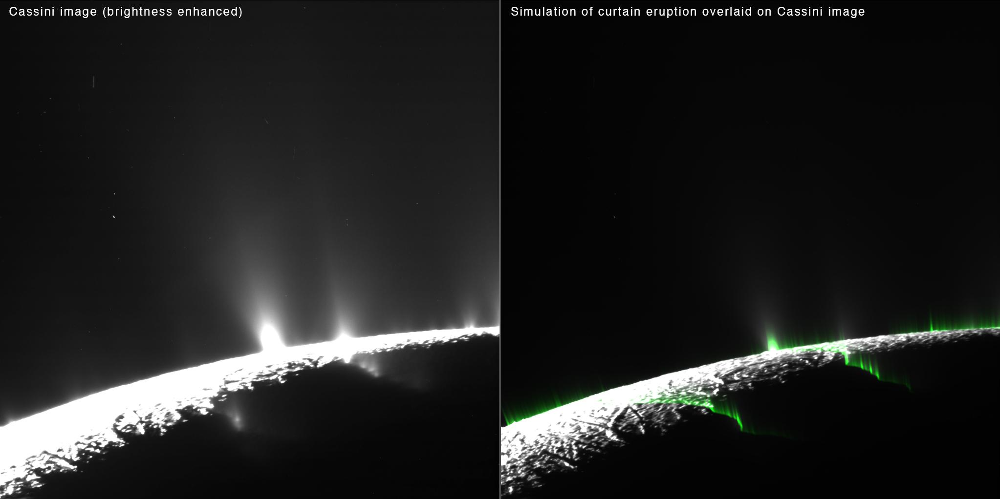

SATURN
Saturn is the sixth planet from the Sun. It has one of the most obvious and beautiful ring systems in the Solar System.
FACTS
THE MOST EXTENSIVE RING SYSTEM
Saturn has the most extensive ring system of any planet in the Solar System.
The rings are believed to be made mainly from particles of ice as well as various rocks and dust. They range in size from micrometres (the typical size of a bacteria cell) to many metres - some are as big as buildings!
THE PLANET WITH THE MOST MOONS
A title held by Jupiter for a long time, since 2018 Saturn is recognised as the planet with the greatest number of moons.
It has a total of 82 recognised moons, topping Jupiter at 79.
THE FLATTEST PLANET
Saturn is the flattest planet in the Solar System. Its polar diameter (the distance across the planet from one point to the opposite side at the poles) is only 90% of the equatorial diameter (the same distance but at the equator).
This is due to its low density as well as the fact that it is spinning on its own axis rapidly.
NOT THE ONLY PLANET WITH RINGS
Even though it is the most obvious, Saturn is not the only planet to have rings.
Jupiter, Uranus and Neptune are also known to have rings, though they are less extensive and therefore less visible than those of Saturn's.
GOD OF AGRICULTURE AND THE HARVEST
Saturn is named after the Roman god of the same name.
In Roman mythology, Saturn is the god of agriculture and the harvest.
IT HAS THE LOWEST DENSITY OF ALL THE PLANETS
In fact, Saturn has such a low density that it is the only planet that would float on water, if you could find a big enough vessel!
LIFE ON SATURN?
- Saturn itself is a very hostile environment to life. Only trace amounts of water ice exist in the clouds that make it up, and the temperatures and pressures are generally not suitable for life.
- In a similar way that we had for Jupiter, the only real chance for life – if there is even a slim one, when it comes to Saturn is not the planet but (a few of) its moons!
- Perhaps the most promising is that of Titan – the largest moon of Saturn and the second largest moon in the Solar System. It was studied by the Cassini-Huygens space-probe (1997-2017) and is known to contain vast seas of liquid methane/ethane on its surface. Methane and ethane are organic (carbon-based) molecules that exist as gases at room temperature and pressure. Some scientists believe that exotic life forms, different to anything we’ve seen before on Earth, could exist within these seas if they were to use the methane/ethane as a solvent rather than water, which is used by all living things on Earth.
- It is unusual for a moon in general to have an atmosphere due to the fact that they are usually not massive enough to have enough gravity to hold onto any gases that would form it, but somewhat remarkably Titan has a thicker atmosphere than ours here on Earth – with a surface pressure of 1.6 times that on the surface of our home planet! It is mostly made up of nitrogen.
- The surface temperature is a rather chilly -180° C, far too cold for any life we know of on Earth to survive. It is also blasted by radiation from Saturn and outer space, which is deadly to humans, as well as all other forms of life.
- There are speculations of us one day establishing a colony on Titan. We would need to grow our own food, though the abundance of carbon-based compounds could be used to make fertilisers for this purpose. We would also need special spacesuits to protect us from the harshly cold temperatures and provide us with oxygen to breathe. That is, unless we could somehow harvest oxygen from the liquid water known to exist underneath the surface of Titan. We would also need protecting from the high amounts of radiation that we’d receive on Titan’s surface due to Saturn. Titan also has a very low surface gravity – only around 14% that of the Earth’s. Humans are not adapted for this kind of environment. Our bones would weaken and we would lose muscle mass posing significant health risks.
- Another moon of Saturn worth mentioning is Enceladus. It’s a small moon but it has a surface completely covered in ice, making it the most reflective surface in the Solar System. It is believed that an ocean of liquid water is hiding underneath the ice, which could again harbour simple life.
- Interestingly, Enceladus appears to constantly be spewing out jets of liquid water and icy particles from beneath its surface into space. Samples of the material from these jets reveals the presence of many of the chemical compounds required for life!
- The image below is one of Enceladus taken from the Cassini-Huygens probe. The jets of material being ejected from the moon's surface are clearly visible.

PIA19061: Enceladus Curtains: Comparing Data and Simulation. NASA/JPL-Caltech/SSI/PSI, Public domain, via Wikimedia Commons.